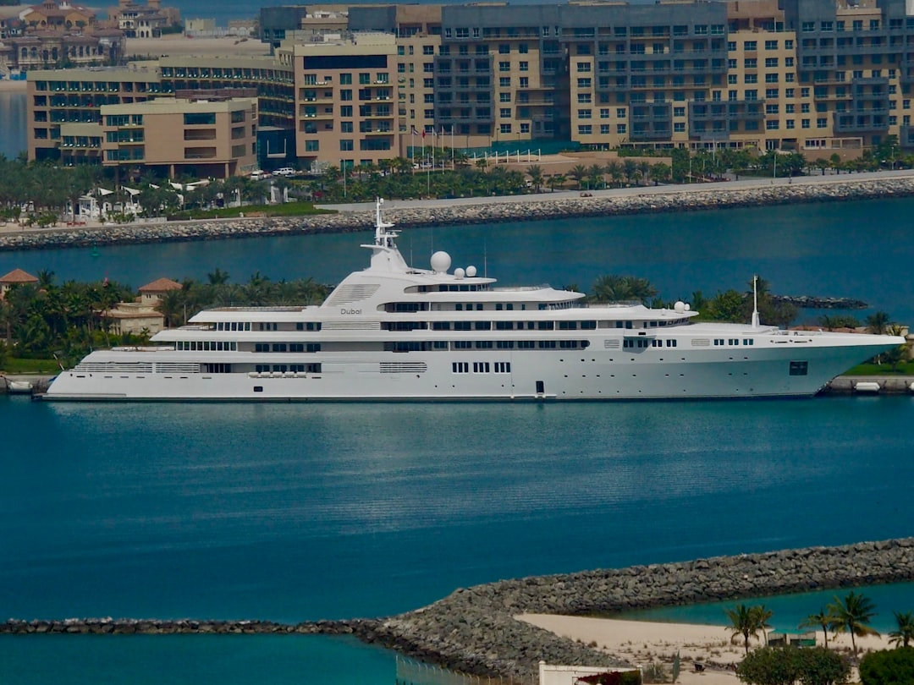

News
Formula 1 Abu Dhabi yacht charter
Formula 1 Abu Dhabi yacht charter
Exclusive Packages for Race Week
Onboard Hospitality and Entertainment
Fleet Options and Customization
Marina and Docking Facilities
Marina and Docking Facilities
Yas Marina Access and Services
VIP Berthing Locations
Security and Concierge Services
Viewing Experience from Yachts
Viewing Experience from Yachts
Optimal Race Viewing Positions
AudioVisual Equipment for Live Broadcasts
Catering and Refreshment Services
Contact Us
Behind-the-Scenes Access: What to Expect on an F1 Yacht Charter in Abu Dhabi
Oct 09, 2024
Behind-the-Scenes Access: What to Expect on an F1 Yacht Charter in Abu Dhabi As the Formula 1 season approaches its climactic finale under the dazzling lights of the Yas Marina Circuit in Abu Dhabi, motorsport enthusiasts from around the globe flock to this glamorous desert oasis.. While watching the race unfold from the grandstands is exhilarating, experiencing it aboard a luxury yacht offers an unmatched blend of opulence, exclusivity, and behind-the-scenes access that transforms an F1 weekend into a once-in-a-lifetime experience. Nestled along Abu Dhabi's stunning coastline, Yas Marina becomes a bustling hub of activity during the Grand Prix.
Best Viewing Spots for the Race from a Yacht in Yas Marina
Oct 09, 2024
Yas Marina, with its shimmering waters and vibrant atmosphere, offers an unparalleled experience for race enthusiasts seeking the thrill of watching a world-class event from the comfort of a yacht.. Nestled on Yas Island in Abu Dhabi, this marina becomes a focal point during major racing events like the Formula 1 Grand Prix.
Comparing Yacht Charter Options for the Abu Dhabi Grand Prix
Oct 09, 2024
When it comes to experiencing the Abu Dhabi Grand Prix, one of the most luxurious and thrilling ways is by chartering a yacht.. This prestigious event, held at the Yas Marina Circuit, transforms Abu Dhabi into a playground for motor racing enthusiasts and luxury seekers alike.
Exclusive Yacht Parties and Events During the F1 Abu Dhabi Weekend
Oct 09, 2024
The Formula 1 Abu Dhabi Grand Prix is one of the most glamorous and eagerly anticipated events on the international sporting calendar.. Set against the stunning backdrop of Yas Marina Circuit, this event attracts a global audience eager to witness the pinnacle of motorsport.
How to Book a Last-Minute Yacht Charter for the Formula 1 Abu Dhabi Race
Oct 09, 2024
Booking a last-minute yacht charter for the Formula 1 Abu Dhabi Race can be an exhilarating experience.. The event, known for its glitz and glamour, takes place at the stunning Yas Marina Circuit, where the excitement of high-speed racing meets the luxury of opulent yachts.
How to Elevate Your Race Weekend with an Exclusive Abu Dhabi Yacht Charter
Oct 09, 2024
How to Elevate Your Race Weekend with an Exclusive Abu Dhabi Yacht Charter Imagine the sun setting over the Arabian Gulf, painting the sky in hues of orange and pink, while you sip on a chilled beverage aboard a luxurious yacht.. This is not just a dream but a reality waiting to be experienced during your next race weekend in Abu Dhabi.
How to Enjoy VIP Treatment During the Abu Dhabi Grand Prix on a Private Yacht
Oct 09, 2024
Title: Experiencing the Abu Dhabi Grand Prix: VIP Treatment on a Private Yacht The Abu Dhabi Grand Prix is one of the most anticipated events in the Formula 1 calendar, attracting fans from all over the globe to witness high-speed thrills in a glamorous setting.. Held at the iconic Yas Marina Circuit, this event not only promises adrenaline-pumping races but also a unique blend of luxury and excitement.
How to Experience the Ultimate Formula 1 Abu Dhabi Yacht Charter Adventure
Oct 09, 2024
Title: The Ultimate Formula 1 Abu Dhabi Yacht Charter Adventure Nestled on the shimmering coastlines of the United Arab Emirates, Abu Dhabi is renowned for its luxurious lifestyle and breathtaking landscapes.. Each year, this vibrant city transforms into a haven for motorsport enthusiasts from around the globe as it hosts the final race of the Formula 1 season at the Yas Marina Circuit.
How to Immerse Yourself in the Glamour of F1 with an Exclusive Abu Dhabi Yacht Experience
Oct 09, 2024
Title: How to Immerse Yourself in the Glamour of F1 with an Exclusive Abu Dhabi Yacht Experience The roar of engines, the thrill of speed, and the dazzle of luxury—Formula 1 is not just a sport; it’s an experience.. To truly immerse oneself in its glamour, there’s no better place than the Abu Dhabi Grand Prix.
How to Make Your Formula 1 Weekend Unforgettable with a Yacht Charter in Abu Dhabi
Oct 09, 2024
Title: How to Make Your Formula 1 Weekend Unforgettable with a Yacht Charter in Abu Dhabi Attending the Formula 1 Grand Prix is an exhilarating experience, but when you combine it with the luxury and elegance of a yacht charter in Abu Dhabi, your weekend transforms into something truly unforgettable.. The combination of high-speed thrills on the track and serene luxury on the water creates a unique blend of excitement and relaxation, making for a perfect getaway that will linger in your memory long after the checkered flag has waved. Abu Dhabi, with its opulent skyline and pristine waters, provides an idyllic backdrop for such an adventure.
How to Secure a Front-Row Seat at the Abu Dhabi Grand Prix on a Luxury Yacht
Oct 09, 2024
Securing a front-row seat at the Abu Dhabi Grand Prix is a dream for many Formula 1 enthusiasts.. The roar of engines, the vibrant atmosphere, and the breathtaking views make it one of the most sought-after experiences in the world of motorsport.
How to Transform Your F1 Experience with an Unforgettable Abu Dhabi Yacht Charter
Oct 09, 2024
The thrill of Formula 1 racing is unparalleled; the roar of engines, the adrenaline-pumping speed, and the electrifying atmosphere create an experience like no other.. But what if you could elevate this already extraordinary experience to new heights?

Luxury Experience of Chartering a Yacht During the Abu Dhabi Grand Prix
Oct 09, 2024
The term "Luxury Experience of Chartering a Yacht During the Abu Dhabi Grand Prix" evokes visions of opulence, exclusivity, and sensory indulgence.. This unique experience seamlessly marries the thrill of high-speed racing with the serene elegance of yachting, creating an unparalleled spectacle for those fortunate enough to partake in it. Imagine a scene where the azure waters of Yas Marina are dotted with luxurious yachts, each one a floating haven of comfort and style.
What is included in an Abu Dhabi Formula 1 yacht charter package?
Oct 09, 2024
The allure of the Abu Dhabi Grand Prix extends far beyond the roar of engines and the thrill of high-speed racing.. It is a spectacle that marries luxury and excitement, offering an experience unlike any other.
What is needed to plan a successful F1 yacht party in Abu Dhabi?
Oct 09, 2024
Planning a successful F1 yacht party in Abu Dhabi is an exhilarating endeavor that combines the thrill of high-speed racing with the luxury and elegance of a nautical celebration.. The Abu Dhabi Grand Prix, as the season finale of the Formula 1 calendar, offers the perfect backdrop for an unforgettable event.
What is the appeal of chartering a yacht during the Abu Dhabi Grand Prix?
Oct 09, 2024
The Abu Dhabi Grand Prix, known for its thrilling races and glamorous atmosphere, attracts thousands of motorsport enthusiasts from around the globe.. While the event itself is a spectacle to behold, experiencing it from the deck of a chartered yacht adds an unparalleled layer of luxury and exclusivity.
What is the best way to book a yacht for the Abu Dhabi F1 weekend?
Oct 09, 2024
Booking a yacht for the Abu Dhabi F1 weekend is an extraordinary way to experience one of the most thrilling events in the world of motorsport.. The combination of high-speed racing action and luxurious surroundings creates an unforgettable atmosphere.
What is the cost of a luxury yacht charter for the Abu Dhabi Grand Prix?
Oct 09, 2024
The Abu Dhabi Grand Prix, a jewel in the crown of Formula 1, is an event that epitomizes luxury and opulence.. Set against the stunning backdrop of Yas Marina Circuit, it attracts a global audience eager to witness high-speed action and indulge in lavish experiences.
What is the experience like on a yacht during the Abu Dhabi F1 race?
Oct 09, 2024
Experiencing the Abu Dhabi Formula 1 race from a yacht is like stepping into a world where luxury, thrill, and exclusivity converge in perfect harmony.. Nestled along the glittering Yas Marina Circuit, these opulent vessels offer an unparalleled vantage point to witness one of the most exhilarating sporting events on the planet. As you step aboard the yacht, you're immediately enveloped by an atmosphere of elegance and sophistication.
What is unique about watching Formula 1 from a yacht in Yas Marina?
Oct 09, 2024
Watching Formula 1 from a yacht in Yas Marina is an experience that transcends the ordinary, blending the thrill of high-speed racing with the opulence and exclusivity of a luxury lifestyle.. This unique vantage point offers an unparalleled perspective on one of the most glamorous sports in the world, set against the backdrop of Abu Dhabi's stunning marina. First and foremost, Yas Marina Circuit is renowned for its architectural brilliance and challenging layout.